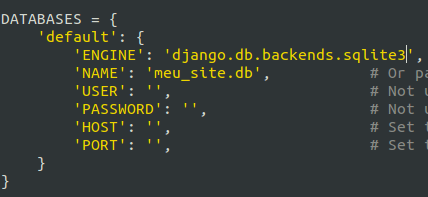
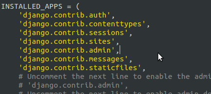
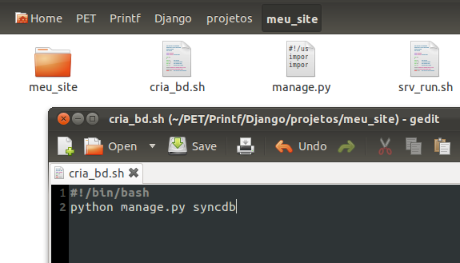
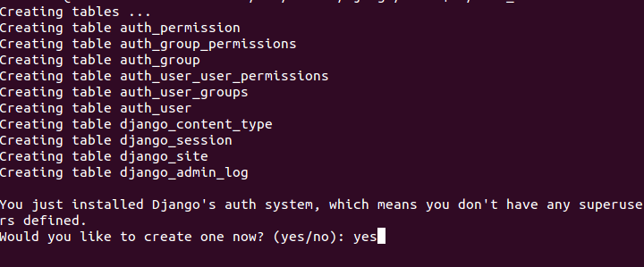
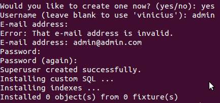
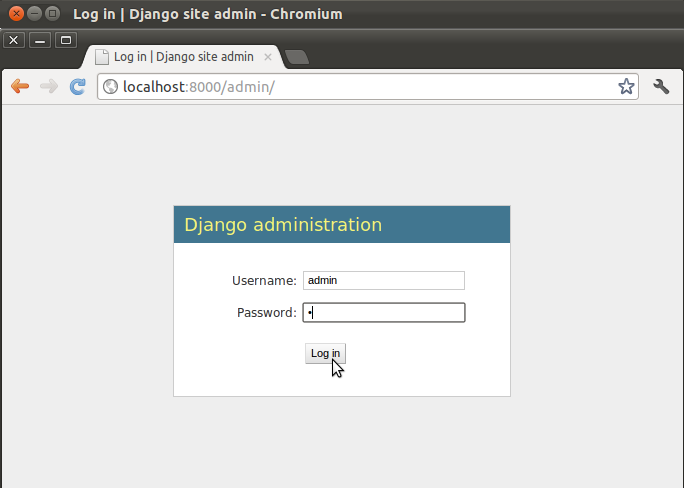
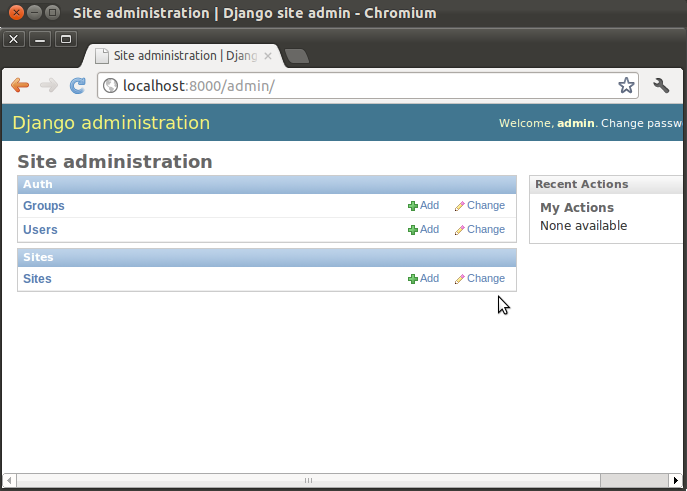

Criando um Administrador(){
Dicas
Como já foi dito anteriormente, no Django não é necessário você perder horas criando um administrador, parte trivial e repetitivo em gerenciadores de conteúdo. Pelo framework, você terá apenas que seguir alguns passos e pronto, de uma maneira “mágica” você já tem um banco de dados e um usuário Administrador.
Para isto, procure pelo arquivo settings.py dentro da pasta gerada no tópico anterior.
Edite as linhas para que fiquem como o modelo abaixo:

(Neste caso usaremos o sqlite e criaremos o banco com o nome de meu_site.db)
Depois, debaixo da linha django.contrib.sites, insira a linha django.contrib.admin:

No arquivo urls.py remova os comentários (caracteres “#”) das linhas (4,5,16):
- from django.contrib import admin
- admin.autodiscover()
- url(r'^admin/', include(admin.site.urls))
(OBS: remova os espaços em branco iniciais de cada linha, pois a linguagem python trabalha com identações para reconhecimento de escopo)
Crie um novo arquivo “.bat” ou “.sh”, como o que já foi mencionado, com a diferença no comando para:
python manage.py syncdb
(Chame-o por exemplo de cria_bd.bat ou cria_bd.sh)

Este último comando irá criar todas as tabelas do seu banco e também cria o seu usuário Administrador.
Ao executar o “cria_bd” será perguntado se deseja criar um “SuperUser” ou “Administrador”, diga que “sim”:

Será pedido que você preencha os dados de login do seu Admin:
(Atente para o detalhe de que não é aceito emails em formatos inválidos)

Após estes passos, dê um refresh na página localhost:8000. Você irá perceber que retornará um “erro 404” de página não encontrada. Isso acontece porque o seu site agora possui um conteúdo que é a página do admin. Portanto, insira o /admin ao endereço:
localhost:8000/admin
Resultado:
Login do Usuário

}